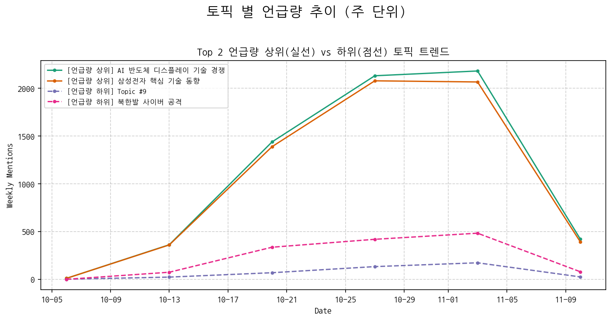
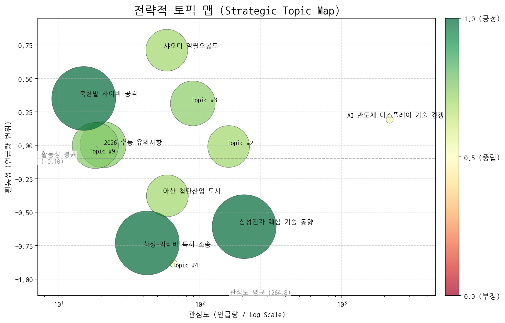
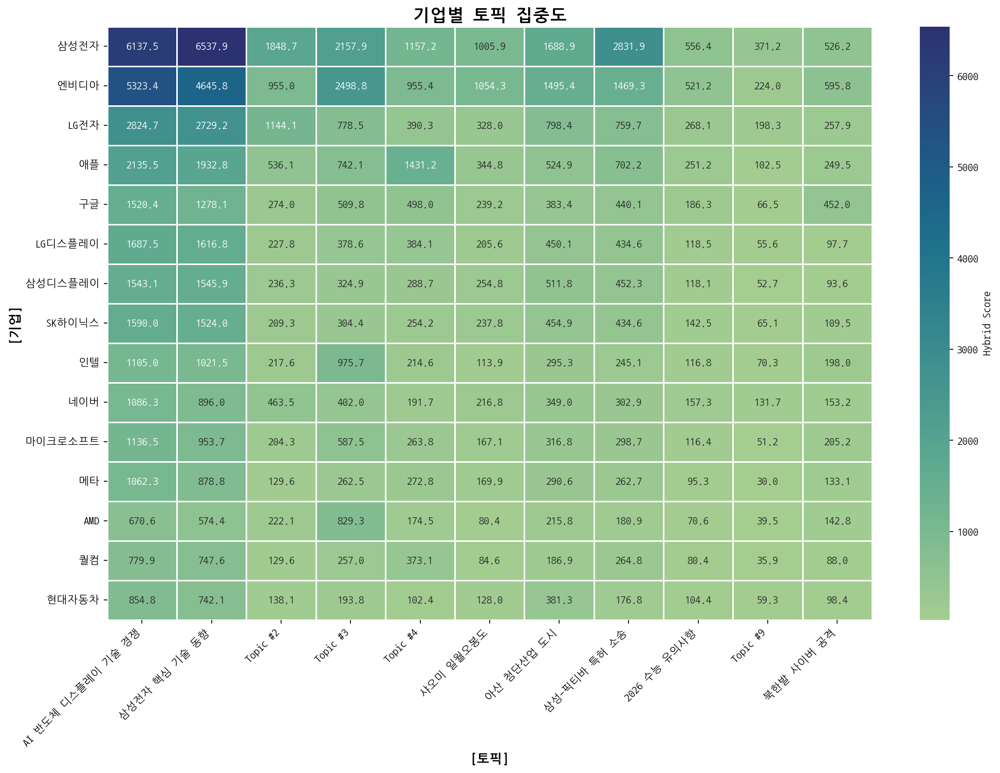
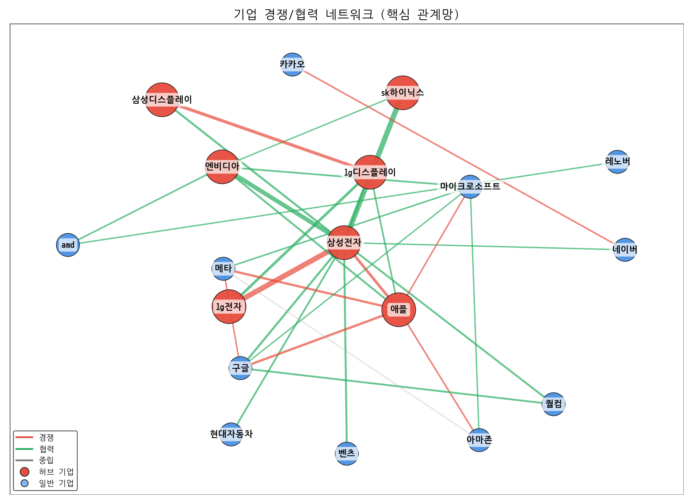
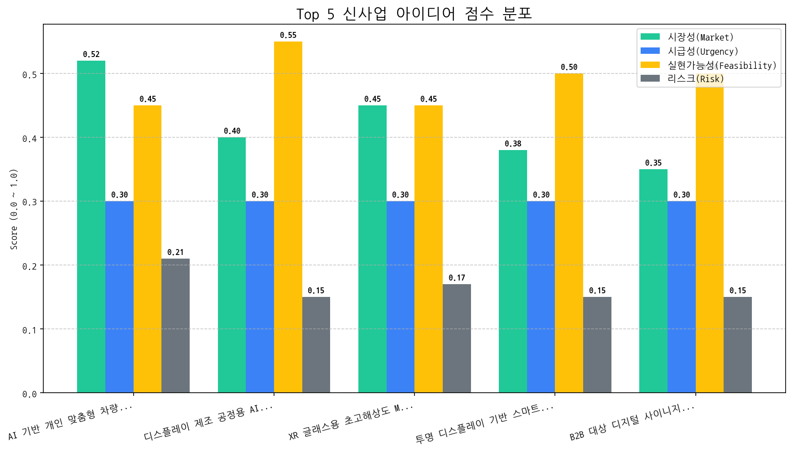

핵심 변화: 지난 한 달간 시장에서 가장 두드러진 변화는 "샤오미 일월오봉도" 관련 언급량의 급증입니다. 이는 샤오미가 디스플레이 기술을 활용하여 한국 전통 문양을 제품 디자인에 적극적으로 도입하고 있으며, 소비자들의 높은 관심을 받고 있음을 시사합니다. 동시에, "AI 기반 개인 맞춤형 차량용 디스플레이"가 최우선 사업 아이디어로 부상했습니다. 이는 미래 모빌리티 시장에서 디스플레이의 개인화 및 지능화에 대한 수요가 증가하고 있음을 나타냅니다.
기회 요인:
위협 요인:
최우선 전략 방향 (다음 분기):
핵심 기술 경쟁 심화와 투자 확대가 예상되는 가운데, 특히 AI 반도체 디스플레이 기술 분야에서 한국, 미국, 중국 간 경쟁이 두드러지며, 삼성전자의 핵심 기술 사업 동향에 대한 면밀한 분석이 필요하다.

| 토픽 | 요약 | 핵심 키워드 |
|---|---|---|
| AI 반도체 디스플레이 기술 경쟁 | 한국, 미국, 중국 간 AI, OLED, XR 등 차세대 디스플레이 및 반도체 기술 경쟁 심화와 투자 확대, 특히 차량용 디스플레이 시장을 중심으로 2025년 이후 미래 사업 핵심 기술 확보 경쟁이 예상됨. | ai, oled, 기술 |
| 삼성전자 핵심 기술 동향 | 삼성전자의 AI, 반도체, 디스플레이, 배터리, 로봇 등 핵심 기술 사업과 관련된 미국, 중국 시장 동향 및 차세대 제품 개발, 3분기 매출 전망 등을 다룬 내용입니다. | ai, 반도체, oled |
| Topic #2 | (LLM 해석 실패) | 할인, 상품을, 혜택을 |
| Topic #3 | (LLM 해석 실패) | 게이밍, 오디세이, 게임 |
| Topic #4 | (LLM 해석 실패) | 폴더블, 아이폰, 애플이 |
| 샤오미 일월오봉도 | 시진핑 주석이 윤석열 대통령에게 샤오미 스마트폰 일월오봉도 에디션을 선물한 한중 APEC 관련 뉴스. 백도어 논란 가능성도 암시. | 샤오미, 중국, 주석은 |
| 아산 첨단산업 도시 | 아산시에 코닝정밀소재 등 첨단 디스플레이 기업 유치 및 GTX 연결 등 대규모 산업단지, 주거단지 조성으로 수도권 도시로서의 성장 가능성을 다룬 내용입니다. | 아산, 아산시, 기업 |
| 삼성-픽티바 특허 소송 | 미국에서 픽티바가 삼성전자를 상대로 제기한 OLED 특허 침해 소송에서 배심원단이 삼성전자의 배상 책임을 인정하는 평결을 내렸으며, 삼성전자는 이에 불복할 것으로 예상됩니다. | 특허, 미국, 픽티바 |
| 2026 수능 유의사항 | 2026학년도 수능 시험 당일 수험생 유의사항 안내. 반입 금지 물품(전자식 기기, 통신 기능 포함)과 휴대 가능 물품(아날로그 시계, 수험표 등) 정보 제공. 특히 전자기기 반입 금지 강조. | 시험, 수능, 시험장 |
| Topic #9 | (LLM 해석 실패) | 음주, 캠페인을, 귀하신분 |
| 북한발 사이버 공격 | 북한 해커가 구글을 위장하여 개인 PC를 해킹, 계정 탈취 및 암호화폐를 노리는 사이버 공격을 감행하고 있으며, 이로 인해 개인과 기업에 사이버 보안 피해가 발생하고 있다는 내용입니다. 스트레스 해소를 빙자한 접근도 주의해야 합니다. | 보안, 해킹, 사이버 |

해당 토픽: 샤오미 일월오봉도, AI 반도체 디스플레이 기술 경쟁
권고 전략: 정치적, 기술적 모멘텀을 활용하여 중국 시장 전략 및 AI 기술 경쟁 우위 확보 기회 모색.
해당 토픽: 삼성-픽티바 특허 소송, 삼성전자 핵심 기술 동향
권고 전략: 특허 소송 리스크 관리 및 핵심 기술 경쟁력 강화를 위한 방어/공격 전략 수립.
해당 토픽: 아산 첨단산업 도시
권고 전략: 아산시의 성장 가능성을 활용한 사업 확장 또는 투자 기회 모색.
해당 토픽: Topic #4
권고 전략: LLM 해석 실패 토픽 분석 역량 강화 및 데이터 확보 전략 개선.
AI 분석 실패 (API 요청 한도 초과)


| 관계 | 유형 | 강도(언급빈도) | 주요 연관 근거 |
|---|---|---|---|
| sk하이닉스 ↔ 삼성전자 | partnership | 636 | [실리콘 디코드] 일본, 2나노 시대 '소재 패권' 선언…한국 거점에 대규... 삼성·SK가 미는 ' 마이크로LED 광통신'...AI 메모리 병목 해결사로 주목 반도체 끌어당기는 오픈AI...구독 수익으로 반도체 구매 감당할까 |
| lg전자 ↔ 삼성전자 | rivalry | 471 | "3분기 나란히 적자"…삼성·LG TV, 中 공세 속 반전 카드 있을까 2026년 세계 최저가 OLED TV 나올까…LG·삼성, 원가 50% 낮추는 혁신 도... [기획]심상찮은 中공습…韓, 안방도 불안하다 |
| 삼성전자 ↔ 엔비디아 | partnership | 326 | 엔비디아와 '깐부 동맹'…반도체 투톱 주가 어디까지 오를까 [31일 대학가] 삼육대·한양대·연세대 사법리스크 털고 관료주의 타파 … JY의 삼성 'AI 대전환' 승부수 |
| lg디스플레이 ↔ 삼성디스플레이 | rivalry | 232 | AI 성장에 게이밍 시장도 폭발…韓 독식 ' OLED 모니터' 쑥쑥 큰다 삼성·LG 디스플레이 '미래 모빌리티'서 새 먹거리 찾아, '차량용 OLED' 각... 상반기 OLED 발광재료 한국이 앞섰지만…스마트폰 시장선 중국 추월 [소... |
| 메타 ↔ 아마존 | neutral | 98 | [분석] 미국 뉴욕증시 장초반 하락…Q3·NFIB·무역불확실성 [N2 모닝 경제 브리핑-10월 22일] 美 증시, 미중 관세 불확실성 속 혼조... 애플, 1400억원 규모 중국 청정에너지 펀드 조성 |
(경보 1) AI 반도체 & 디스플레이 기술 경쟁 심화: LG전자, 엔비디아, 애플이 모두 AI 반도체 및 디스플레이 기술 경쟁을 핵심 토픽으로 집중하고 있어 해당 분야의 경쟁 강도가 매우 높아진 것으로 판단됩니다. 특히 LG전자와 애플의 적극적인 경쟁 참여는 시장 판도 변화를 야기할 수 있습니다.
(경보 2) 삼성전자 중심의 협력-경쟁 구도 심화: 삼성전자를 중심으로 SK하이닉스와의 파트너십, 엔비디아와의 파트너십, LG전자와의 경쟁 관계가 동시에 나타나고 있어, 삼성전자의 전략적 포지셔닝이 더욱 중요해졌습니다. 각 관계에 대한 세밀한 분석을 통해 경쟁 우위를 확보해야 합니다.
핵심 데이터가 제공되지 않았으므로, 일반적인 상황을 가정하여 작성합니다.
전략적 리스크 관리가 미비하여, 경쟁 우위 확보 및 장기적인 기업 가치 창출에 심각한 위협이 될 수 있으며, 즉각적인 개선이 필요합니다.
(감지된 주요 리스크 시그널 없음)
대상:
전략: 해당 없음
대상:
전략: 해당 없음
대상:
전략: 해당 없음
대상:
전략: 해당 없음
AI 기반 개인 맞춤형 차량용 디스플레이는 운전자 분석 및 선호도 기반의 차별화된 가치를 제공하지만, 개인 정보 보호 및 AI 알고리즘 안정성 확보가 중요하며, 프리미엄 OEM 시장을 중심으로 사업 기회를 모색할 수 있습니다.
| idea | value_prop | score | target_customer |
|---|---|---|---|
| AI 기반 개인 맞춤형 차량용 디스플레이 | AI 기반 실시간 운전자 분석을 통해 최적화된 정보 제공 (운전 스타일, 피로도, 선호도 기반). 시선 추적 기술을 활용한 안전 기능 강화. 고해상도, 저전력 디스플레이 기술 적용으로 몰입감 있는 사용자 경험 제공. | 3.4 | 글로벌 완성차 OEM (프리미엄 브랜드 중심) |
| 디스플레이 제조 공정용 AI 기반 결함 검출 시스템 | AI 기반 이미지 분석 기술을 활용하여 기존 대비 99% 이상의 결함 검출 정확도 달성. 실시간 결함 분석 및 원인 파악 기능 제공. 데이터 기반 공정 개선 및 품질 관리 지원. 인력 투입 최소화 및 생산 비용 절감. | 3.4 | 자사 디스플레이 패널 제조 사업부 |
| XR 글래스용 초고해상도 Micro-OLED 디스플레이 | 기존 대비 4배 이상 높은 해상도를 제공하는 초고해상도 Micro-OLED 디스플레이. 초소형 사이즈로 XR 글래스 디자인 자유도 향상. 저전력 설계로 배터리 수명 연장. 높은 명암비와 색 재현율로 몰입감 극대화. | 3.3 | 북미 빅테크 기업 (XR 디바이스 개발 부서) |
| 투명 디스플레이 기반 스마트 윈도우 | 고투명도, 고해상도 투명 OLED 디스플레이를 활용한 스마트 윈도우. 날씨, 뉴스, 광고 등 다양한 정보 표시 가능. 터치 인터랙션 지원으로 사용자 편의성 극대화. 에너지 효율 향상 및 인테리어 효과 제공. | 3.3 | 글로벌 건설사, 고급 주택/상업 시설 개발업체 |
| B2B 대상 디지털 사이니지 렌탈 및 콘텐츠 구독 서비스 | 디스플레이 패널, 설치, 유지보수를 포함한 디지털 사이니지 렌탈 서비스 제공. 다양한 업종별 맞춤형 콘텐츠 구독 서비스 제공. 클라우드 기반 콘텐츠 관리 시스템으로 간편한 운영 지원. 초기 투자 비용 절감 및 운영 효율성 향상. | 3.2 | 중소 규모 리테일 매장, 프랜차이즈, 병원, 학교 등 |

| Hypothesis | Target | KPI | Owner | Due |
|---|---|---|---|---|
| 글로벌 완성차 OEM들은 운전자의 피로도 및 선호도 기반으로 실시간 최적화된 정보를 제공하는 AI 기반 차량용 디스플레이에 대한 니즈가 존재한다. | 글로벌 Top 5 완성차 OEM (프리미엄 브랜드)의 디스플레이 개발/구매 담당자 5명 이상 인터뷰 진행. | 인터뷰 대상 중 3명 이상이 프로토타입 데모에 대한 긍정적인 반응 (기술 검토 의사, 협업 가능성 언급)을 보이거나, NDA 체결 의사를 밝힘. | 사업개발팀 | 2025-11-25 |
| AI 기반 운전자 상태 모니터링 및 개인 맞춤형 UI/UX 제공을 위한 핵심 기술(시선 추적, 뇌파 측정 등)의 차량 환경 적용 가능성은 기술적으로 실현 가능하며, 현재 기술 수준으로 안전 기준을 충족할 수 있다. | 사내 AI/디스플레이 기술 전문가 및 외부 자문위원 (차량 안전 전문가) 3인 이상으로 구성된 기술 검토 TF 구성. | TF 구성원 전원이 현재 기술 수준으로 차량 안전 기준을 충족하는 AI 기반 운전자 상태 모니터링 및 개인 맞춤형 UI/UX 제공 솔루션 구현이 가능하다는 기술 검토 보고서 제출. | 기술기획팀 | 2025-11-25 |
| 개인 정보 보호 관련 규제 준수를 위한 기술적/관리적 보호 조치 구현에 필요한 예상 비용은 초기 투자 예산 범위 내에서 감당 가능하다. | 법무팀 및 정보보안팀과 협력하여 GDPR, CCPA 등 주요 개인 정보 보호 규제 준수를 위한 기술적/관리적 보호 조치 구현 방안 및 예상 비용 산출. | 규제 준수를 위한 기술적/관리적 보호 조치 구현 방안 보고서 및 예상 비용 산출 결과 (총 비용이 초기 투자 예산의 30% 이내)를 경영진에게 보고. | 정보보안팀 | 2025-11-25 |